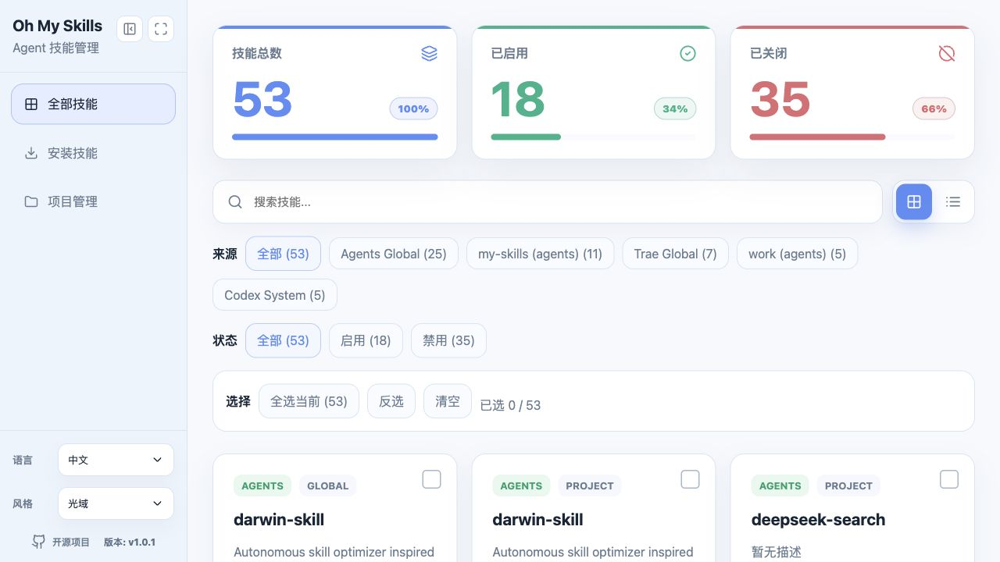
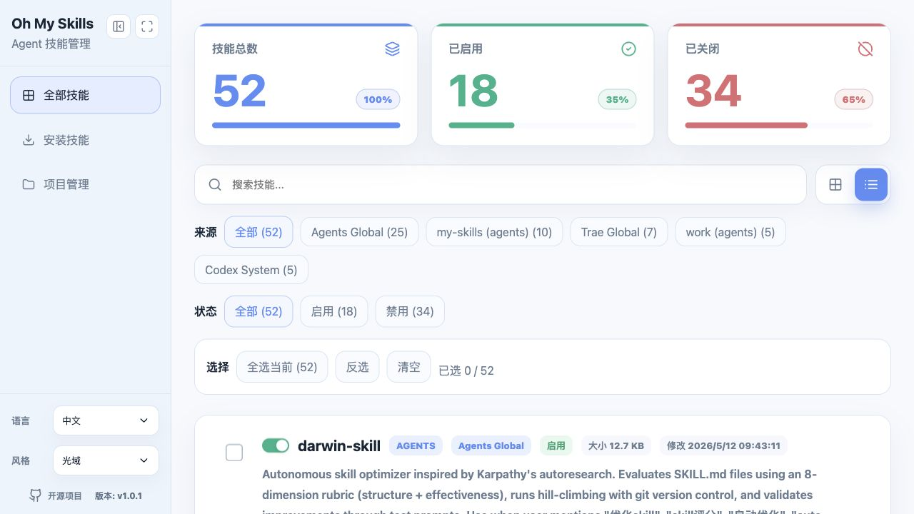
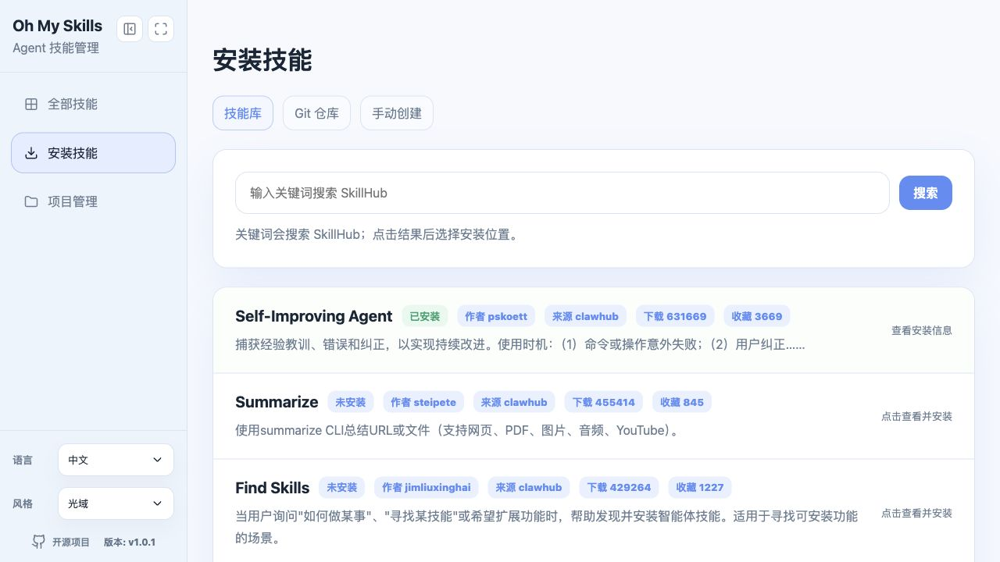
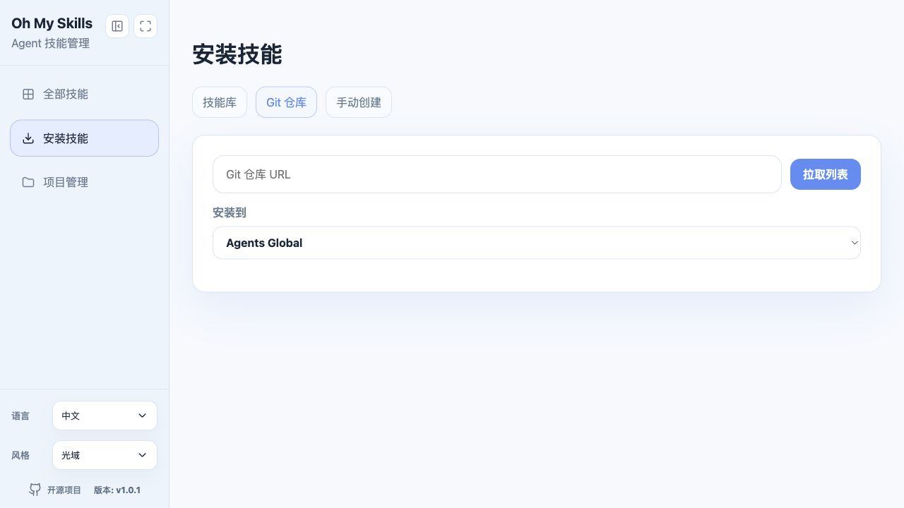
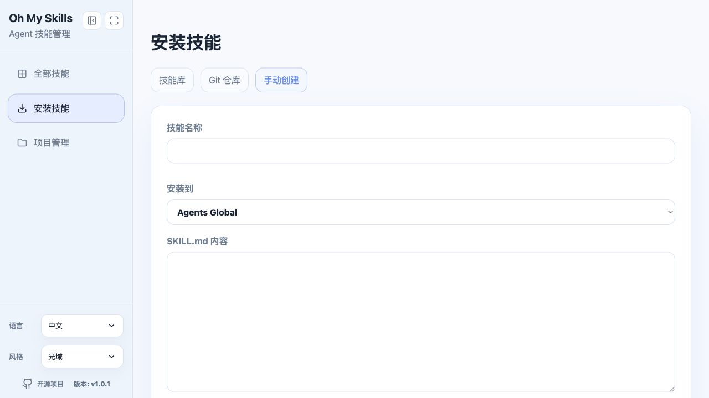
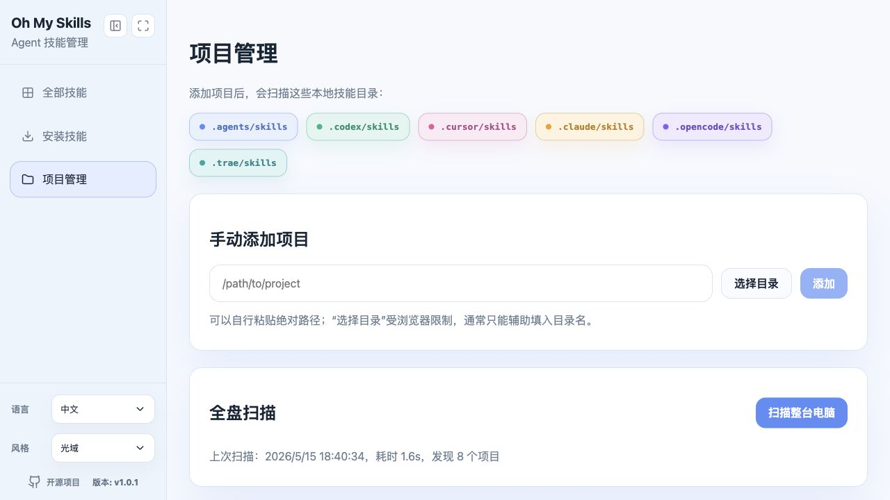
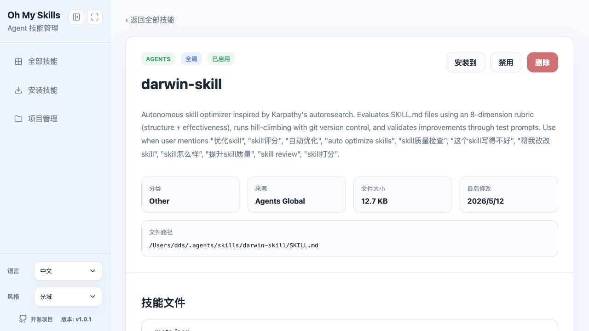
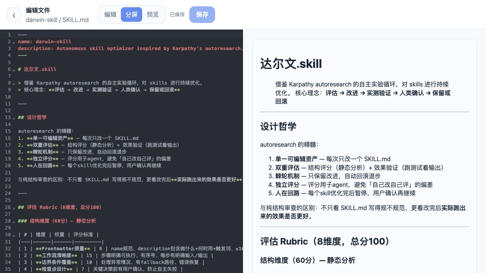

统一技能总览
卡片和列表两种浏览方式，来源筛选、状态筛选、搜索、统计指标和批量操作都在首页完成。
一个本地运行的 AI Agent Skill 管理工具，把 Agents、Codex、Claude、Cursor、OpenCode、Trae 和项目里的 skills 收到一个可视化工作台里。
npm i -g oh-my-skills oms start --daemon --open # 默认优先使用 2525 端口 oh-my-skills --install

面向高频使用多种 AI 工具的人：快速查看、安装、编辑、复制、启用、禁用和删除 skills。
卡片和列表两种浏览方式，来源筛选、状态筛选、搜索、统计指标和批量操作都在首页完成。
搜索框默认空，输入关键词后按 Enter 或点击搜索，结果显示作者、来源、下载量、收藏量和本机安装状态。
输入仓库地址后拉取技能目录，并选择目标位置安装。
全盘扫描或手动添加项目，让项目级 `.agents/skills`、`.claude/skills` 等目录一起纳入管理。
技能详情页展示全部文件，可编辑文件进入独立编辑页，支持编辑、分屏、预览和保存反馈。
所有主要 API 能力都有 CLI 命令，agent 也可以通过安装内置 Oh My Skills skill 来自动操作。
以下图片来自当前本地应用界面，可直接用于 README、npm 页面和项目介绍。







推荐全局安装，也可以使用 npx 临时运行。默认优先启动在 2525 端口，不可用时自动寻找下一个空闲端口。